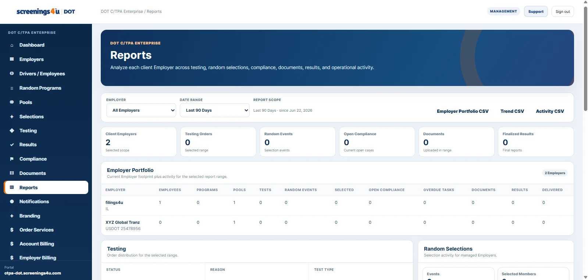

S
Safety-sensitive employee records
Centralize covered employee profiles, work status, locations and program assignments.
Manage safety-sensitive aviation employees, program assignments, random testing, testing orders, training records, compliance documentation, results and reporting from one software workspace.

14 CFR Part 120 • This page describes software workflows and operational organization, not legal guidance.
Centralize covered employee profiles, work status, locations and program assignments.
Keep aviation program records and day-to-day administration organized around the applicable workforce.
Manage eligibility, pool participation, selection events and program history.
Track testing reasons, order status and related employee records in one workflow.
Keep relevant training documentation connected to the employee and program record.
Review operational activity across testing, results, documents and reporting views.
The FAA Drug Abatement program operates under 14 CFR Part 120 together with DOT procedures in 49 CFR Part 40. Covered aviation employers must administer testing programs for specified safety-sensitive employees, including qualifying contractor and subcontractor personnel.
FAA guidance identifies Part 119 certificate holders operating under Parts 121 and 135, certain air tour operators under § 91.147, and air traffic control facilities not operated by FAA or under contract to the U.S. military.
The program must account for covered safety-sensitive functions performed by employees hired directly and, where applicable, by contractor or subcontractor personnel.
Part 120 and Part 40 govern required testing, prohibited conduct, refusals, and the steps that must be completed before a person who violated the rules may return to safety-sensitive functions.
FAA Drug Abatement conducts oversight and inspections, so employers need organized records showing program implementation, covered personnel, testing activity, and required follow-up.
screenings4u DOT software helps aviation employers organize safety-sensitive personnel, program records, testing workflows, documents, notifications, and reporting in one operational workspace—without replacing the FAA rules or your legal/compliance judgment.
Instead of rebuilding your FAA program from spreadsheets, email, shared drives, and calendar reminders, use one software workspace for the people, pools, testing activity, records, notifications, and reports your team manages.
Use the same underlying platform for the people, programs, activity, documents and reports that support day-to-day administration.
Explore the full platform →Keep plan pricing visible while you review the feature differences. When you reach the final price row, the sticky price header gets out of the way.
These optional add-ons and orderable services are maintained in the screenings4u DOT service catalog and are billed separately from the monthly software subscription.
Adds employee / driver capacity above the plan limit.
Adds SSO to a DOT Employer account.
Adds another DOT agency management portal to the same Employer account.
Custom or specialized third-party integration work.
Managed operational testing and compliance assistance.
Implementation assistance, onboarding, and data migration services.
Browse the additional services available to support DOT program operations.
Expanded DOT alcohol testing support with additional compliance and program-management services. Valid for one year.
High-volume DOT alcohol testing solutions for large nationwide fleets with customized reporting solutions.
DOT alcohol testing support when a qualifying transportation incident requires testing.
DOT breath alcohol testing support for applicable transportation employment requirements.
DOT alcohol testing support for applicable random testing selections and compliance requirements.
DOT alcohol testing support for applicable reasonable-suspicion testing situations.
Personalized assistance for drivers and employers who need help understanding or coordinating DOT medical examination requirements.
A comprehensive DOT physical package that combines the complete medical examination with DOT urine drug and breath alcohol testing.
A comprehensive DOT physical package designed for drivers who want the examination and additional compliance-focused documentation support in one service.
A complete DOT physical with added driver-focused documentation support for a straightforward certification process.
A complete DOT physical examination covering the core medical and certification requirements for commercial drivers.
Employer-focused DOT physical scheduling and program support for companies managing physical examinations for their commercial drivers.
Continuous monitored screening for compliance.
Ideal for individual compliance and peace of mind.
Immediate priority processing when time is critical.
Quick results to get your drivers on the road faster.
Full DOT compliance support for required random selections.
Sensitive handling for workplace safety needs.
Mandatory testing support for SAP program compliance.